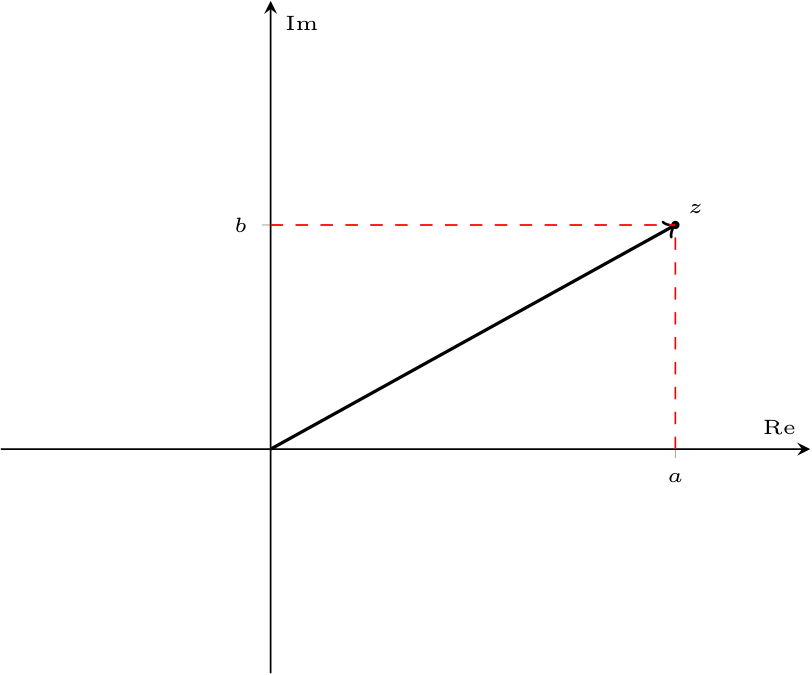
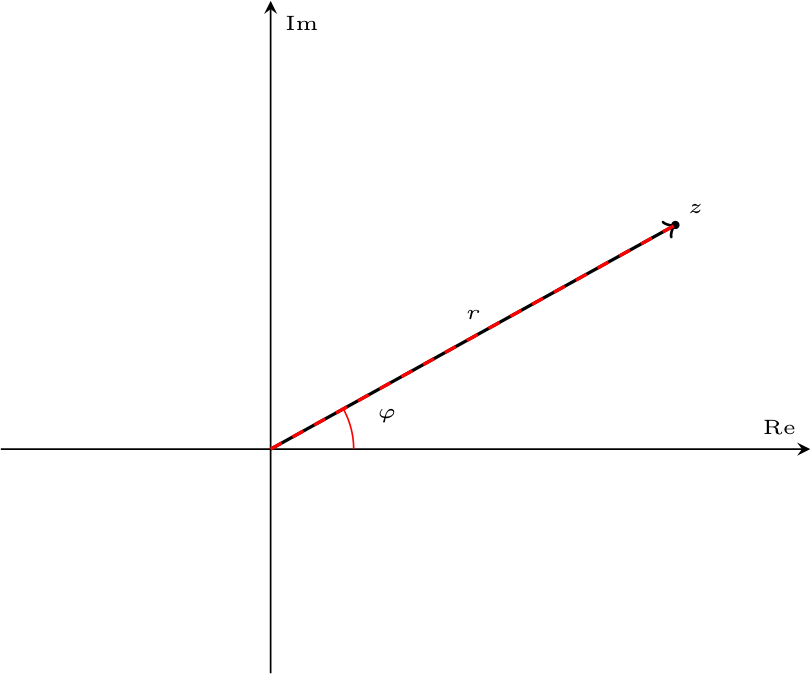
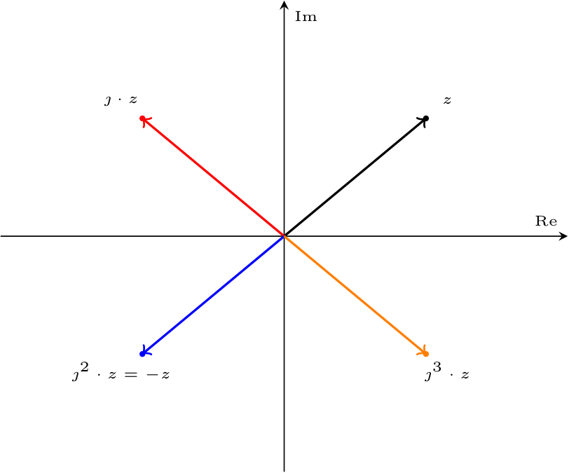

Definizione - Insieme dei numeri complessi
L'insieme dei numeri complessi \( \mathbb{C}\) è un'estensione dell'insieme numeri reali \( \mathbb{R}\), nato per trovare tutte le soluzioni delle equazioni polinomiali: è introdotta infatti l'unità immaginaria \( \imath\) tale che \[ \imath^2 = -1 \] Notiamo inoltre che per indicare l'unità immaginaria è possibile utilizzare (e sarà utilizzato) anche il simbolo \( \jmath\).
Definizione - Rappresentazione di un numero complesso in parte reale ed immaginaria
Un generico numero complesso \( z \in \mathbb{C}\) può essere visto come somma di una parte reale \( a\) \[ a = \mathrm{Re}\{ z \} \] e di una parte immaginaria \( b\) \[ b = \mathrm{Im}\{ z \} \] ovvero \[ z = a + \imath \cdot b \qquad z \in \mathbb{C} \quad \text{e} \quad a,b \in \mathbb{R} \]
Definizione - Rappresentazione di numeri complessi in coordinate cartesiane
È possibile rappresentare ogni numero complesso come un punto in un piano (piano complesso o di Gauss) di coordinate \( (a, b)\) (ovvero si considera l'asse delle ascisse come la parte reale \( a\) e l'asse delle ordinate come la parte immaginaria \( b\)) Oltre a questo modo, è possibile inoltre utilizzare anche la notazione in coordinate polari, considerando il modulo \( r\) (distanza dall'origine) e l'argomento \( \varphi\) (l'angolo di rotazione rispetto all'asse reale) Si ha quindi che \[ \begin{array}{ccl} a & = & r \cdot \cos(\varphi) \\ b & = & r \cdot \sin(\varphi) \end{array} \] e, in maniera inversa, si ha che è possibile ottenere la rappresentazione polare considerando \[ \begin{array}{ccl} r & = & \sqrt{a^2 + b^2} \\ \varphi & = & \left\{ \begin{array}{lc} \arctan \left( \frac{b}{a} \right) & a \geq 0 \\ \arctan \left( \frac{b}{a} \right) + \pi & a \lt 0 \\ \end{array} \right. \end{array} \]


Definizione - Formula di Eulero e rappresentazione esponenziale
È possibile inoltre considerare la formula di Eulero per cui \[ \mathrm{e}^{\jmath \cdot \varphi} = \cos(\varphi) + \jmath \cdot \sin(\varphi) \] che permette di rappresentare un qualsiasi numero complesso nella forma \[ r \cdot \left( \cos(\varphi) + \jmath \cdot \sin(\varphi) \right) \qquad = \qquad r \cdot \mathrm{e}^{\jmath \cdot \varphi} \] Notiamo in particolare che il vettore \( \mathrm{e}^{\jmath \cdot \varphi}\) ha modulo unitario.
Considerando la formula di Eulero, si ha che è possibile esprimere le funzioni coseno e seno come \[ \cos(\varphi) = \frac{\mathrm{e}^{\jmath \cdot \varphi} + \mathrm{e}^{-\jmath \cdot \varphi}}{2} \] e \[ \sin(\varphi) = \frac{\mathrm{e}^{\jmath \cdot \varphi} - \mathrm{e}^{-\jmath \cdot \varphi}}{2 \cdot \jmath} \]
Considerando la formula di Eulero, si ha che è possibile esprimere le funzioni coseno e seno come \[ \cos(\varphi) = \frac{\mathrm{e}^{\jmath \cdot \varphi} + \mathrm{e}^{-\jmath \cdot \varphi}}{2} \] e \[ \sin(\varphi) = \frac{\mathrm{e}^{\jmath \cdot \varphi} - \mathrm{e}^{-\jmath \cdot \varphi}}{2 \cdot \jmath} \]
Definizione - Moltiplicare per \( \jmath\) un numero complesso
Considerando un generico numero complesso \( z \in \mathbb{C}\), si ha che moltiplicarlo per \( \jmath\) attua uno "sfasamento" di \( \frac{\pi}{2}\) in senso antiorario, ovvero

Definizione - Numero complesso coniugato
Considerando un numero complesso \( z \in \mathbb{C}\), \[ z = a + \jmath \cdot b \] si definisce il numero complesso coniugato \( \overline{z}\) (o \( z^*\)) il numero complesso con parte immaginaria opposta, ovvero \[ \overline{z} = a - \jmath \cdot b \]